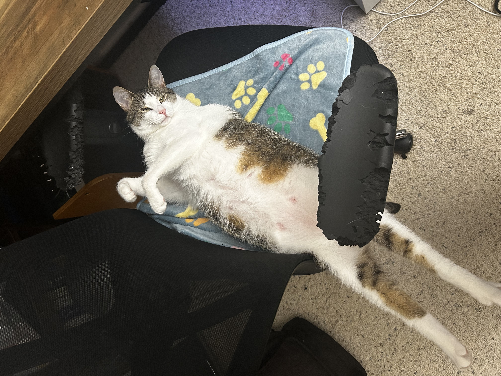

Hi, I'm Hajin!

About Me
Fourth year at the University of California, San Diego, pursuing a B.S. in Computer Science from the Jacobs School of Engineering.

Fourth year at the University of California, San Diego, pursuing a B.S. in Computer Science from the Jacobs School of Engineering.